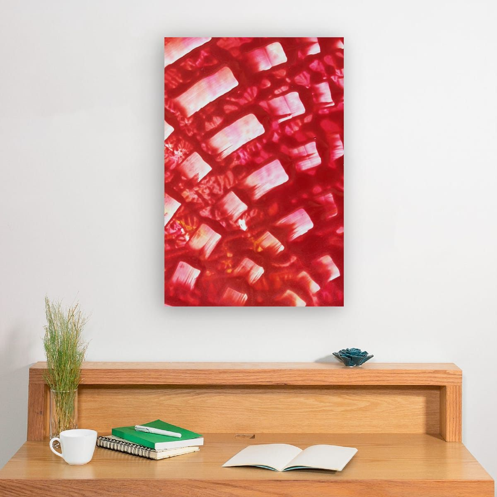
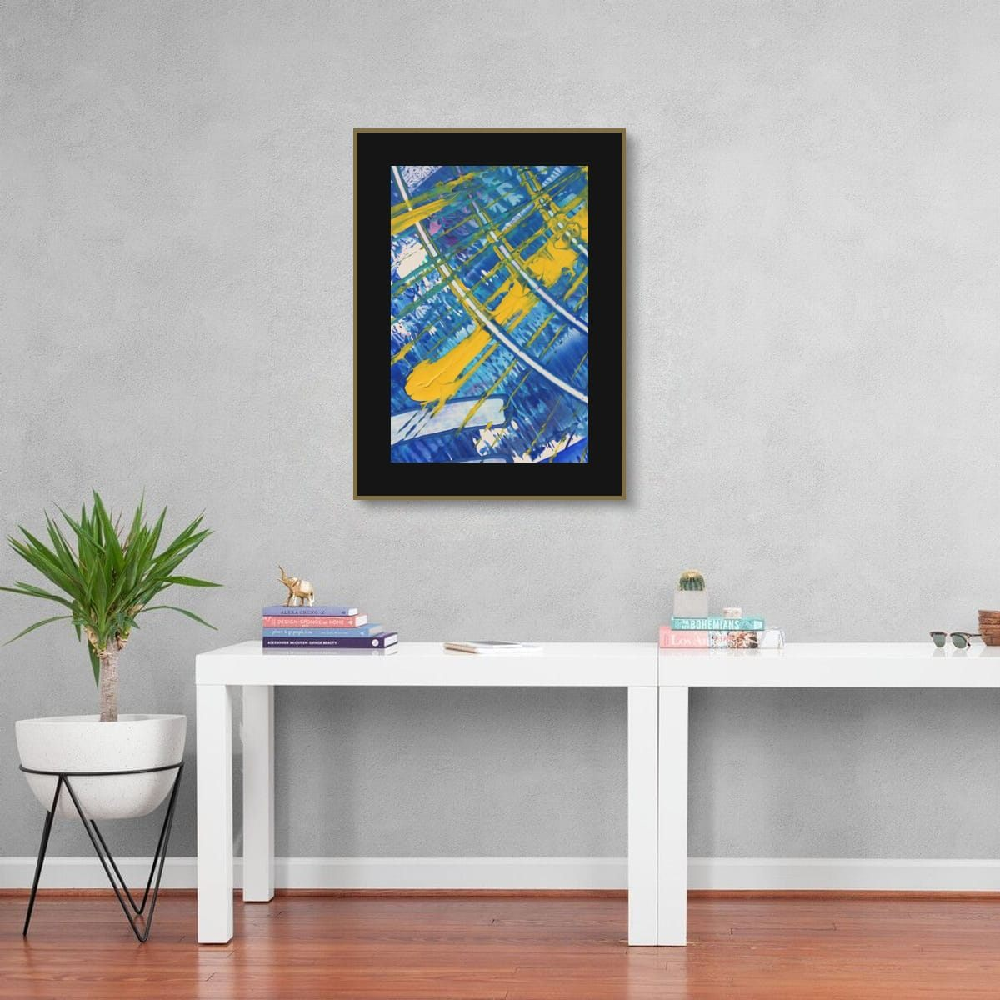
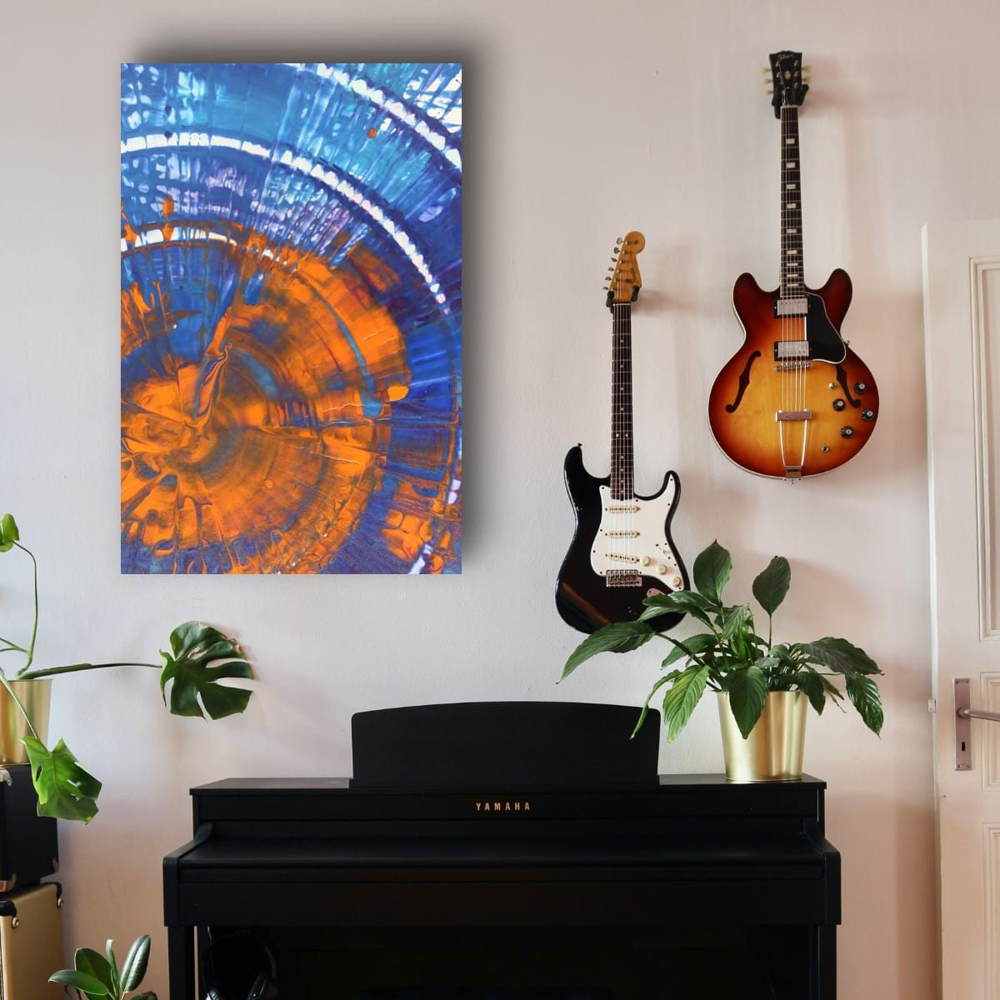
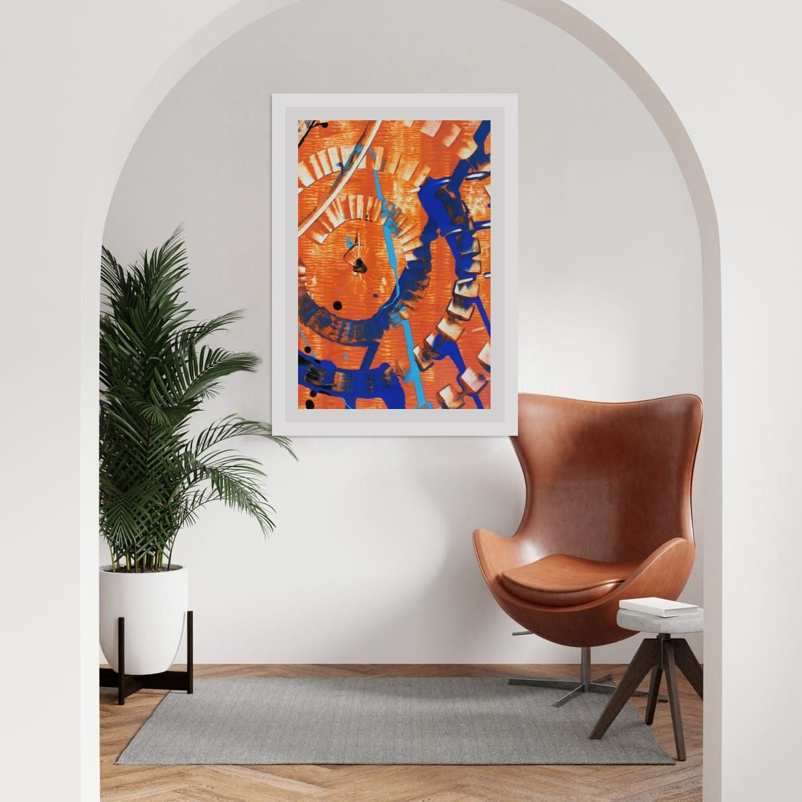

The short answer
Above a desk, use the same proportions as above any furniture: art about two thirds to three quarters of the desk width, hung 6 to 10 inches (15 to 25 cm) above the desk surface or above any monitor. For video calls, place art on the wall behind your chair so it sits fully inside the camera frame, above your head.
The wall you face
If your desk faces a wall, that wall is your view for hours every day. I would choose art there the way I would choose music for working: something you enjoy, but that does not demand attention. Calmer palettes and softer contrast tend to fade into the background when you are concentrating and reward you when you look up.
If you work facing a window instead, the side walls matter more. Art in your peripheral vision adds color without competing with the screen.

The wall behind you on video calls
For many people the wall behind the desk is now the most-viewed wall in the house. A good piece there makes you look settled and considered. A few practical points:
- Check the camera view first. Sit where you normally sit, open your camera, and see what is actually in the frame.
- Keep the art fully inside the frame. A piece cut in half by the edge of the picture looks accidental.
- Aim above your head, or beside it. Art that sticks out of the top of your head on screen is distracting.
- Watch for glare. Glass and glossy surfaces reflect lights and windows straight into the camera. Matte surfaces or unglazed formats are safer.
- Avoid very fine stripes. Tight, regular patterns can shimmer on camera. Organic abstract detail reads well.
Calm or energizing?
Color affects how a room feels, and an office is a room where that matters. Blues and greens are generally seen as calming and focused. Warm reds, oranges and yellows feel more energetic and stimulating. Neither is right or wrong; it depends on the work you do and how you like to feel while doing it. A detail with a cool field and a small warm accent is a good compromise. My guide on warm and cool art goes into this in more detail.

Above a desk with monitors
If your desk faces the wall and you use one or two monitors, the screens usually cover the part of the wall where art would normally go. Hanging art just above a monitor rarely works: you either crane your neck or ignore it. Better options are a piece on the side wall within your peripheral view, art on the wall behind you, or a larger piece hung where the monitors are not, for example above a low cabinet or bookcase next to the desk.
Small offices and shelves
In a small office, or a desk in a corner of another room, there may not be a free wall at all. Shelves are the answer. Leaning a framed print on a shelf or a deep picture ledge lets you change it whenever you like, layer it with books and objects, and avoid drilling. Keep leaning pieces modest in size so they stay stable, and secure larger ones.
Light in a work space
Offices tend to have strong light: a window for daylight, a desk lamp, sometimes a ring light for calls. Keep art out of direct sun to prevent fading, and check that your desk lamp or call light does not create a bright reflection on the art behind you. If it does, move the light slightly or choose a matte format.
Reading corners and creative spaces
Not every work space is a desk. A reading chair in a corner, a music area or a craft table all benefit from one well-chosen piece. In smaller spaces like these, one vertical print at seated eye level often feels more personal than a large statement.

Checklist
- Above a desk: 2/3 to 3/4 of its width, 6–10″ above the surface or monitor.
- Facing wall: calmer art you will enjoy for hours.
- Wall behind you: check the camera view, keep art fully in frame, above your head.
- Avoid glare and very fine stripes on camera.
- Choose cool colors for calm, warm accents for energy.
These are general guidelines, not strict rules. Every room is different, and a few inches either way will not ruin a good wall. Room scenes are digital mockups; the artworks are details of real hand-painted paintings. Prints are offered in several sizes and formats on the shops linked from each artwork page.